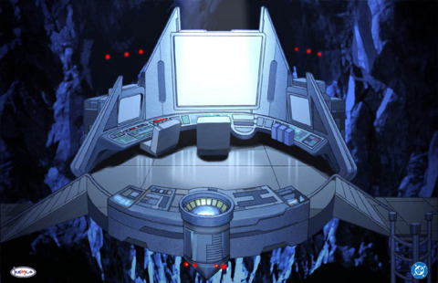

Batman
☰
Navigation Menu
About Me
Skills
Projects
Experience and Education
Certifications
Contact
Extra
The Batcomputer

Navigation Menu
An advanced computer system for forensic investigations, data analysis and criminal intelligence.
Focus: Data analysis, cybersecurity, investigative technology.
The Batmobile
Navigation Menu
A specialized vehicle designed for mobility, protection and rapid emergency response.
Focus: Mechanical engineering, vehicle technology, system integration.
The Batsuit
Navigation Menu
An advanced protective suit combining armor, communication systems and specialized tactical equipment.
Focus: Materials engineering, wearable technology, protection.
The Batsignal
Navigation Menu
A communication system used by Gotham City Police Department to request Batman's assistance.
Focus: Communication, coordination and emergency response.